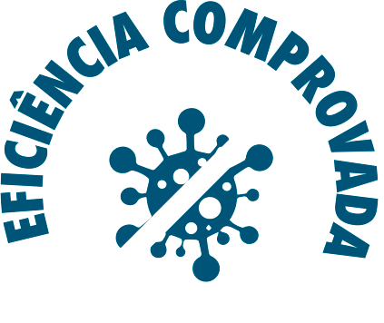

Uma solução prática e econômica para trazer qualidade de vida para seus colaboradores e clientes
Cadastre – se para receber mais informações sobre nossos filtros
As informações que você fornecer serão utilizadas apenas para o envio de e-mails, ofertas e/ou promoções, como descrito na nossa Política de Privacidade na Internet. Esteja ciente que estas informações podem ser transferidas para um servidor localizado nos Estados Unidos para fins de medição e armazenamento. Se você não concorda com este uso de suas informações pessoais, por favor não use este sistema de e-mails.
SEJA UM PONTO AZUL
ASSISTA O VIDÉO E DESCUBRA O DIVISOR DE ÁGUAS PARA A PRODUTIVIDADE E RECEITA DA SUA EMPRESA
filtros salva
MATA 99,999% DOS VÍRUS, ALÉM DE RETER FUNGOS E BACTÉRIAS
INCLUINDO O SARS-COV-2 (COVID-19)

ONDE A SALVAR FAZ A DIFERENÇA
AMBIENTES ACADÊMICOS
Os filtros da salvar vem aumentando a segurança e proteção dos alunos e docentes na sala de aula, evitando a transmissão de doenças pelo ar de forma econômica e de fácil aplicação.


AMBIENTES INDUSTRIAIS
A qualidade do filtro ar nas indústrias são de estrema importância. Nossos filtros barram partículas em suspensão e diversos metais pesados que podem afeta diretamente a saúde das pessoas no local fechado.
AMBIENTES COMERCIAIS
Com uma solução barata e fácil de implementar, o filtro da salvar pode aumentar a segurança e qualidade do ar em ambientes comerciais, onde transitam centenas de clientes e sua equipe de colaboradores.